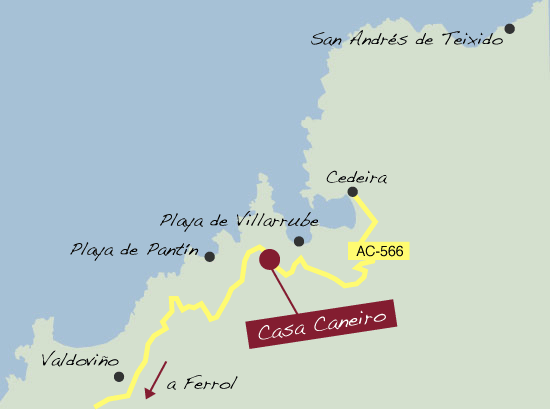

Localización
Casa Caneiro
Frádigas, 1 Pantín 15553 (Valdoviño - A Coruña)
Teléfono: 981 485 955
Correo electrónico: info@casacaneiro.es
Coordenadas GPS:
8° 5' 26'' W
43° 38' 25'' N

Casa Caneiro se encuentra ubicada al noroeste de la provincia de A Coruña, en una zona con grandes atractivos turísticos.
Situada en
Pantín, célebre por su prueba del
Campeonato Mundial de Surf, desde nuestro local se disfruta de unas vistas espectaculares sobre
la playa de
Vilarrube y la ría de
Cedeira.
Nuestra costa es una referencia a la hora de hablar de turismo veraniego en Galicia, con
Valdoviño y Cedeira a menos de diez minutos del
establecimiento. La cercanía de
Ferrol, el santuario de
San Andrés de Teixido y la comarca de
Ortegal nos convierten en una parada ideal para cualquier visitante de
nuestro entorno.
Si no sabe cómo llegar hasta Casa Caneiro, puede trazar su itinerario en esta
página de rutas.